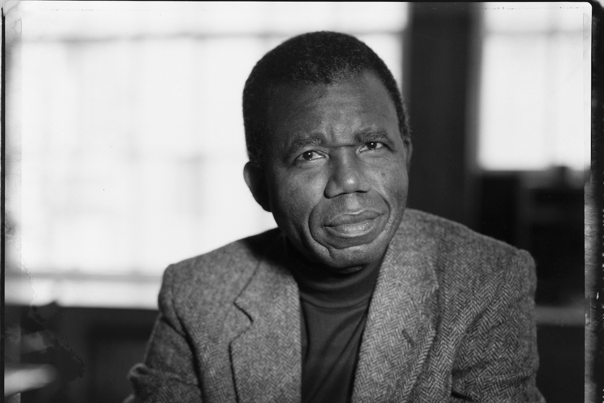

1930-2013
"It is the storyteller who makes us
what we are, who creates history.
The storyteller creates the memory
that the survivors must have,
otherwise their surviving would have no meaning"
Chinua Achebe was a Nigerian novelist, poet, professor, and critic, widely regarded as one of the most important African writers of the 20th century. He was born on November 16, 1930, in Ogidi, a town in southeastern Nigeria. Achebe was raised in a Christian household by his parents, Isaiah Okafo Achebe and Janet Anaenechi Iloegbunam.
Achebe's early education was primarily in English, but he also learned Igbo, his native language. He attended Government College Umuahia and later the University College, Ibadan, where he studied English, history, and theology. After completing his studies, he began working as a teacher.
In 1958, Achebe published his first novel, "Things Fall Apart," which is often considered his masterpiece and one of the most significant works in African literature. The novel tells the story of Okonkwo, a warrior and leader in a fictional Igbo village, and explores the effects of British colonialism and Christian missionaries on traditional Igbo society. "Things Fall Apart" garnered international acclaim and established Achebe as a leading voice in African literature.
Throughout his career, Achebe wrote numerous other novels, essays, and poems, addressing themes such as colonialism, African identity, and the clash of cultures. Some of his other notable works include "No Longer at Ease," "Arrow of God," "Anthills of the Savannah," and "A Man of the People."
In addition to his writing, Achebe was an influential critic and essayist, advocating for African literature and culture. He was deeply committed to promoting African voices and challenging Western stereotypes about Africa.
Achebe's contributions to literature earned him numerous awards and honors, including the Man Booker International Prize (2007), the Dorothy and Lillian Gish Prize (2010), and the Peace Prize of the German Book Trade (2002). He also held several academic positions, including professorships at universities in Nigeria and the United States.
Chinua Achebe passed away on March 21, 2013, in Boston, Massachusetts, leaving behind a rich legacy as a pioneering African writer whose works continue to resonate with readers around the world. His writings have inspired generations of writers and scholars and remain essential reading for anyone interested in African literature and culture.